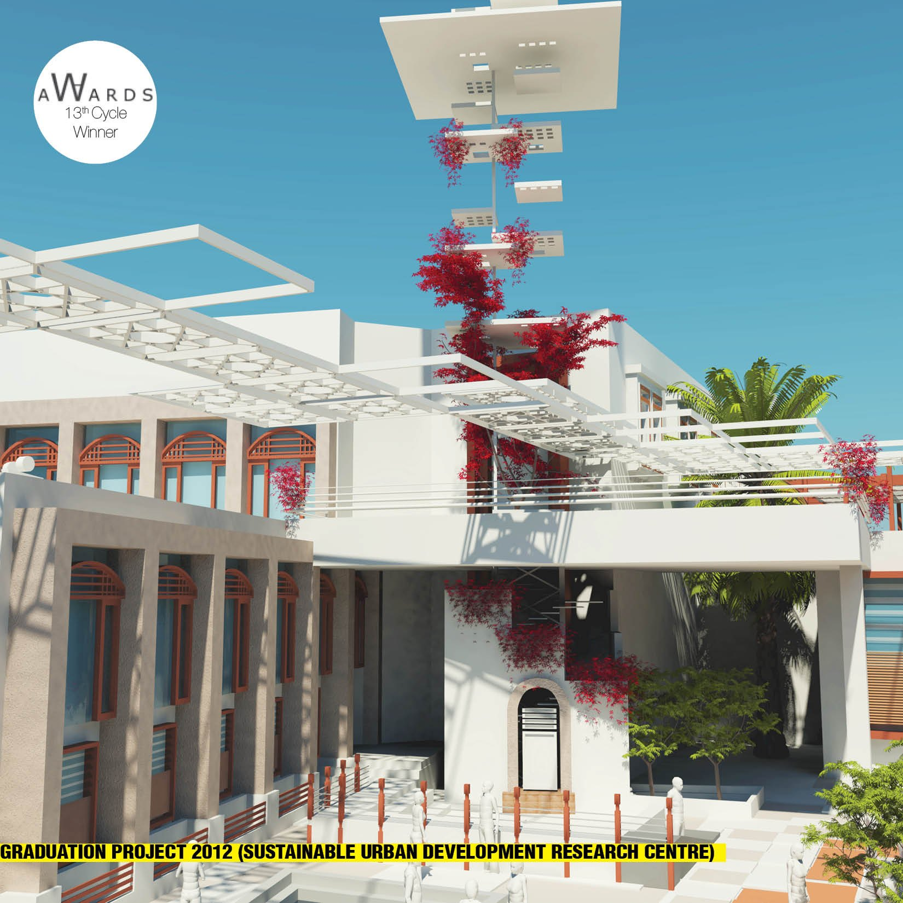
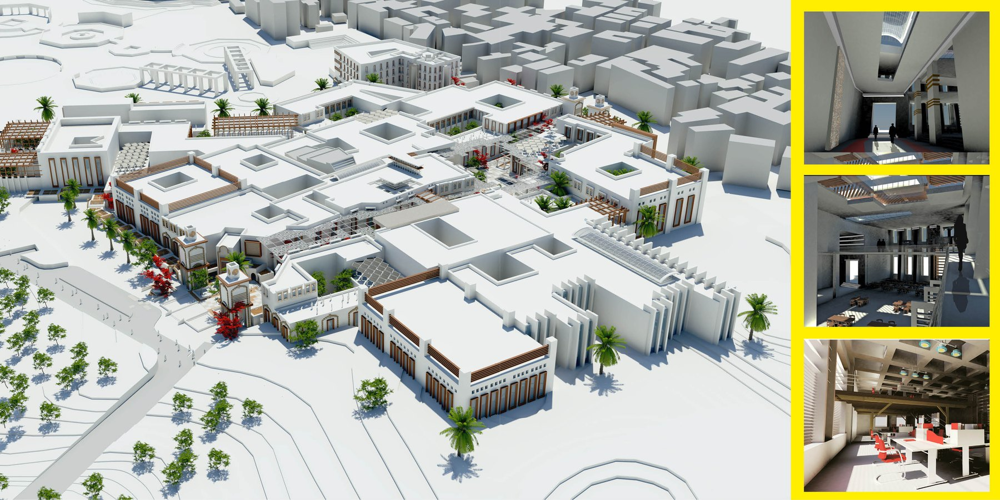
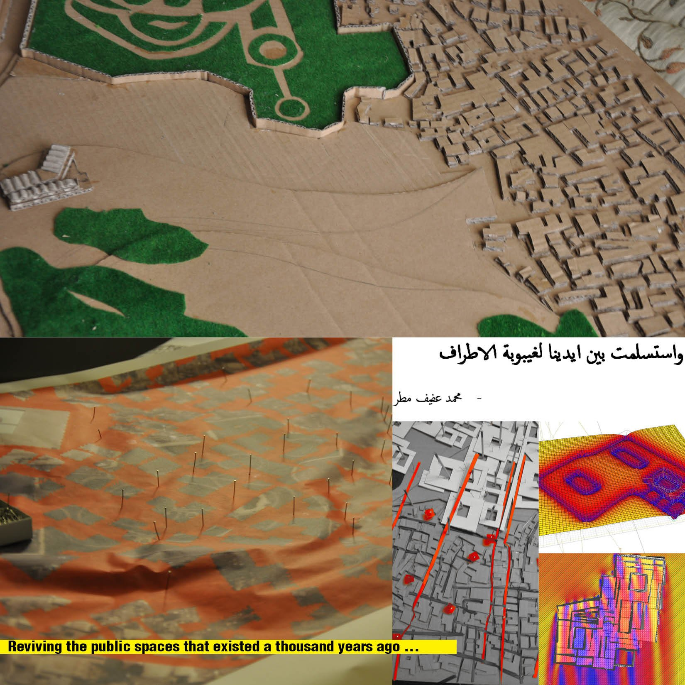

/ GRADUATION PROJECT — AWARD WINNER
Sustainable Urban Development
Research Centre
A 2012 graduation project and World Architecture Community award winner — a research facility set into the heart of a deteriorated historic Cairo district, giving urban research a home while reviving the public spaces the area held a thousand years ago.

/ CONCEPT
Research set into the fabric it works to repair.
The site was chosen for the deteriorated state of its historic urban fabric and the need for a sustainable approach to its people and their heritage. Rather than stand apart from that problem, the project plants a research facility in the heart of the district — a setting for research and development in the urban fields: upgrading slums and squatter settlements, and drawing up strategies for new settlements elsewhere in the country.
The building is made to work two ways. It can house a major governmental body, or break down into rentable offices for the NGOs working in urban development — letting them coordinate their efforts across the country from a single address.
It also reaches back into the site’s own memory, reviving the public spaces that stood here a thousand years ago and stitching them back into the everyday life of the neighbourhood.

Part of the plan was tested across a range of software to measure how its materials performed — rammed-earth partitions, insulating membranes — while a Revit model simulated Cairo’s climate on the building to size its energy, cooling and heating loads. The physical study models read the district’s dense fabric against the public voids the design works to bring back.
